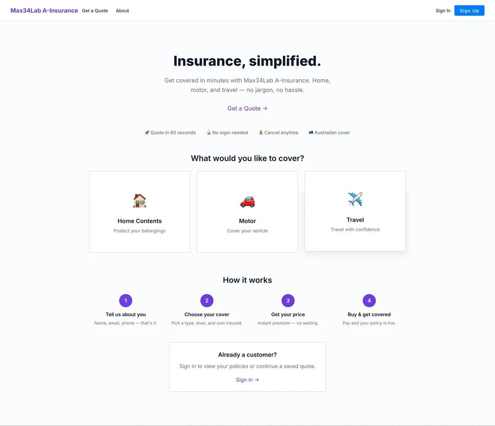
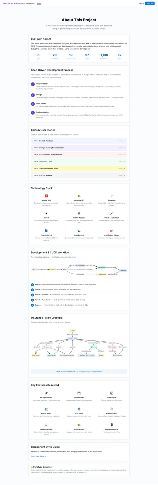

Case study · Full-stack insurance prototype
A-Insurance
A complete insurance journey covering quote, purchase, policy servicing, cancellation, renewal and staff operations: implemented in under two days once the requirements were complete, using Kiro AI and a spec-driven workflow.
- Delivery
- < 2 days after requirements
- Scope
- 6 epics · 20 user stories
- Quality
- 97 automated tests
- Primary tool
- Kiro AI
a-insurance.max34lab.com

The project
A-Insurance demonstrates how a Business Analyst can take a complete business process from initial concept through to a working production-style application. It combines requirements management, process modelling, UX design, automated testing, CI/CD and cloud deployment in one portfolio case study.
The prototype is designed for demonstration purposes. It does not create real insurance policies or process payments.
Delivery result
Complete requirements to deployed product in under two days
The implementation began only after the lifecycle, requirements, business rules, technical design and acceptance criteria were defined. Kiro then generated the solution task by task, while I reviewed the output, refined the experience and validated behaviour against the requirements.
Actual product experience
The live homepage offers an immediate quote journey for home contents, motor and travel insurance, with no login required to begin.
Customer quote landing page
Spec-driven development process
01Requirements
19 detailed requirements with acceptance criteria covering the full lifecycle, navigation, UI consistency and non-functional needs.
02Technical design
Architecture, data models, API routes, state machine, security and design system documented before coding.
03User stories
20 stories across six epics with Gherkin-style acceptance criteria, each mapped to a deliverable feature.
04Implementation
Kiro generated the solution task by task, including frontend components, backend functions, migrations, tests and deployment pipelines.
Epics and user-story structure
Technology stack
Angular 19.2
Standalone components, reactive forms and component-based project structure.
ng-aquila 19.7
Allianz design system components with light-mode styling.
Supabase
PostgreSQL, row-level security, authentication, Edge Functions and storage.
TypeScript 5.6
Strict types across frontend and Deno-based backend code.
Deno
Supabase Edge Functions executed in a Deno server environment.
Vitest + fast-check
Property-based and unit testing with 97 automated tests.
GitHub Actions
Automated linting, test execution and production builds.
Vercel
Static hosting with Git-triggered production deployment.
CSS design tokens
Consistent theming, spacing, colour and reusable component patterns.
Development and CI/CD flow
Kiro specification→Feature branch→GitHub pull request→Automated tests→Production build→Vercel deployment
- Kiro AI: structured requirements, technical design, implementation tasks and code generation.
- GitHub: version control, branch protection, pull requests and review history.
- GitHub Actions: automated linting, tests and production build checks.
- Vercel: automatic deployment after the main branch passes validation.
- Supabase: database migrations and Edge Functions managed alongside the application.
Insurance policy lifecycle
The application models the complete lifecycle from quote through to policy expiry:
Quote
Customer and risk details generate a premium.
Purchase
Cover is selected and the policy becomes active.
Endorsements
Customer and policy details can be changed during the term.
Renewal
A renewal offer is generated before the policy expires.
Cancellation
Policies can be cancelled with appropriate effective dates.
Reinstatement
Eligible cancelled policies can be restored.
Lapse
Unrenewed cover transitions to lapsed status.
Audit
Staff actions and lifecycle changes remain traceable.
Key features delivered
No-login quote
Start and purchase without creating an account first.
Save for later
Save quotes and return through the customer dashboard.
Full lifecycle
Endorse, cancel, reinstate, renew and lapse policies.
Buy for others
Separate purchaser and insured-person details.
Staff portal
Search, retrieve, review and audit operational records.
PDF documents
Generate policy documents and store them securely.
Session handling
Expired tokens are detected with graceful recovery.
Design system
Consistent ng-aquila components and design tokens.
Responsive UI
Works across desktop, tablet and mobile screens.
Project documentation inside the product
The About page itself acts as a transparent delivery record, showing requirements, epics, technology, workflow and lifecycle design.
Project About page

What this case study demonstrates
Requirements before code
The build speed came from doing the analysis first, not skipping it.
AI as a delivery accelerator
Kiro converted structured specifications into working software while human review maintained scope and quality.
End-to-end ownership
The project covers business analysis, UX, architecture, development, testing and deployment.
Traceable quality
Requirements map to user stories, acceptance criteria, implementation tasks and automated tests.